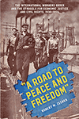 |
"A Road to Peace and Freedom"
The International Workers Order and the Struggle for Economic Justice and Civil Rights, 1930–1954
Zecker, Robert M.
The history of the International Workers Order's struggle to enact a social-democratic, racially egalitarian vision for America
430 pp • 6x9 • Fall 2017
paper 978-1-4399-1516-5
cloth 978-1-4399-1515-8 |
|
Against Capital in the Twenty-First Century
A Reader of Radical Undercurrents
Edited by Asimakopoulos, John and Richard Gilman-Opalsky
A broad, nonsectarian collection of anti-capitalist thinking, featuring landmark contributions both classic and contemporary
390 pp • 6x9 • Fall 2017
paper 978-1-4399-1358-1
cloth 978-1-4399-1357-4
|
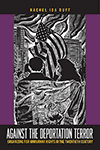 |
Against the Deportation Terror
Organizing for Immigrant Rights in the Twentieth Century
Buff, Rachel Ida
Reveals the formerly little-known history of multiracial immigrant rights organizing in the United States
382 pp • 6x9 • Fall 2017
paper 978-1-4399-1534-9
cloth 978-1-4399-1533-2
|
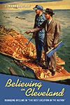 |
Believing in Cleveland
Managing Decline in "The Best Location in the Nation"
Souther, J. Mark
Explores how civic and business leaders used image-making in an effort to reimagine and revive Cleveland in the decades after World War II
210 pp • 6x9 • Fall 2017
paper 978-1-4399-1397-0
cloth 978-1-4399-1396-3 |
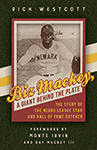 |
Biz Mackey, a Giant behind the Plate
The Story of the Negro League Star and Hall of Fame Catcher
Westcott, Rich
Forewords by Monte Irvin and Ray Mackey III
The first biography of arguably the greatest catcher in the Negro Leagues
160 pp • 5.375x8.5 • Fall 2017
cloth 978-1-4399-1551-6
|
|
Communities and Crime
An Enduring American Challenge
Wilcox, Pamela, Francis T. Cullen, and Ben Feldmey
A systematic exploration of how criminology has accounted for the role of community over the past century
282 pp • 6x9 • Fall 2017
paper 978-1-59213-974-3
cloth 978-1-59213-973-6
|
|
The Cost of Being a Girl
Working Teens and the Origins of the Gender Wage Gap
Besen-Cassino, Yasemin
Traces the origins of the gender wage gap to part-time teenage work, which sets up a dynamic that persists into adulthood
238 pp • 6x9 • Fall 2017
paper 978-1-4399-1349-9
cloth 978-1-4399-1348-2
|
|
Exploiting the Wilderness
An Analysis of Wildlife Crime
Warchol, Greg L.
A contemporary criminological analysis of the African and Asian illegal trade in wildlife
208 pp • 6x9 • Fall 2017
paper 978-1-4399-1367-3
cloth 978-1-4399-1366-6
|
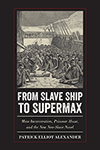 |
From Slave Ship to Supermax
Mass Incarceration, Prisoner Abuse, and the New Neo-Slave Novel
Alexander, Patrick Elliot
The first interdisciplinary study of mass incarceration to intersect the fields of literary studies, critical prison studies, and human rights
266 pp • 6x9 • Fall 2017
paper 978-1-4399-1415-1
cloth 978-1-4399-1414-4
|
|
Latino Mayors
Political Change in the Postindustrial City
Edited by Orr, Marion and Domingo Morel
With a Foreword by Luis Ricardo Fraga
The first book to examine the rise of Latino mayors in the United States
312 pp • 6x9 • Fall 2017
paper paper 978-1-4399-1543-1
cloth 978-1-4399-1542-4
|
|
Love
A Philadelphia Affair
Kephart, Beth
From the best-selling author of Flow comes a love letter to the Philadelphia region, its places, and its people
New in Paperback!
176 pp • 5.5x8.5 • Fall 2017
paper 978-1-4399-1316-1
cloth 978-1-4399-1315-4
|
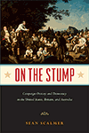 |
On the Stump
Campaign Oratory and Democracy in the United States, Britain, and Australia
Scalmer, Sean
The story of how the "stump speech" was created, diffused, and helped to shape the modern democracies of the Anglo-American world
236 pp • 6x9 • Fall 2017
paper 978-1-4399-1504-2
cloth 978-1-4399-1503-5
|
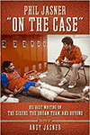 |
Phil Jasner "On the Case"
His Best Writing on the Sixers, the Dream Team, and Beyond
Edited by Jasner, Andy
Three decades of reporting by famed Philadelphia Hall of Fame sportswriter Phil Jasner
264 pp • 6x9 • Fall 2017
cloth 978-1-4399-1494-6 |
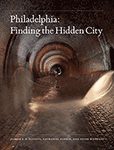 |
Philadelphia
Finding the Hidden City
Elliott, Joseph E. B., Nathaniel Popkin, and Peter Woodall
Revealing the physical and cultural intricacies of Philadelphia, from the intimate to the monumental
200 pp • 7.875x10.5 • Fall 2017
cloth 978-1-4399-1300-0 |
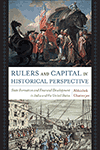 |
Rulers and Capital in Historical Perspective
State Formation and Financial Development in India and the United States
Chatterjee, Abhishek
Explains the concomitant and interconnected emergence of "public" finance and "private" banking systems in the context of state formation in the eighteenth and nineteenth centuries
188 pp • 5.5x8.25 • Fall 2017
cloth 978-1-4399-1500-4
|
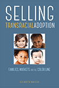 |
Selling Transracial Adoption
Families, Markets, and the Color Line
Raleigh, Elizabeth
Examines cross-race adoptions from the perspectives of adoption providers, showing how racial hierarchies and the supply and demand for children shape the process
274 pp • 6x9 • Fall 2017
paper 978-1-4399-1478-6
cloth 978-1-4399-1477-9
|
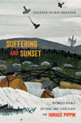 |
Suffering and Sunset
World War I in the Art and Life of Horace Pippin
Bernier, Celeste-Marie
A majestic biography of the pioneering African American artist
New in Paperback!
552 pp • 6.125x9.25 • Fall 2017
paper 978-1-4399-1274-4
cloth 978-1-4399-1273-7
|

|
Tasting Freedom
Octavius Catto and the Battle for Equality in Civil War America
Biddle, Daniel R. and Murray Dubin
Celebrating the life and times of the extraordinary Octavius Catto, and the first civil rights movement in America
New in Paperback!
632 pp • 6x9 • Fall 2017
paper 978-1-59213-466-3
cloth 978-1-59213-465-6
|
|
Toward a Pragmatist Sociology
John Dewey and the Legacy of C. Wright Mills
Dunn, Robert G.
An original study that mines the work of John Dewey and C. Wright Mills to animate a more relevant and critical sociology
198 pp • 5.5x8.25 • Fall 2017
cloth 978-1-4399-1459-5 |
|
We Decide!
Theories and Cases in Participatory Democracy
Menser, Michael
Argues that democratic theory and practice needs to shift its focus from elections and representation to sharing power and property in government and the economy
360 pp • 6x9 • Fall 2017
paper 978-1-4399-1418-2
cloth 978-1-4399-1417-5
|
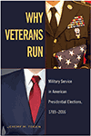 |
Why Veterans Run
Military Service in American Presidential Elections, 1789–2016
Teigen, Jeremy M.
Why more than half of American presidential candidates have been military veterans—and why it matters
320 pp • 6x9 • Fall 2017
paper 978-1-4399-1436-6
cloth 978-1-4399-1435-9
|
Click here to download the catalog (pdf). |